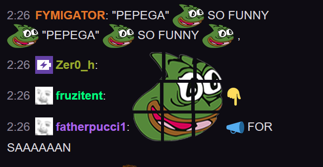

Что это такое и для чего?
Informsystem – игровой чат-бот, отвечающий на вопросы игроков в чате и предоставляющий различными статистические данные по активностям игроков.
Команды
Команды для чат-бота необходимо писать в общий чат или в приват самому боту.
Статистика по игровым достижениям (обновляется 1 раз в 10-15 минут при наличии персонажа онлайн):
!ad - статистика игрока за текущий день
!aw - статистика игрока за текущую неделю
!am - статистика игрока за текущий месяц
!ay - статистика игрока за текущий год
*добавление к сообщению конструкции -a выведет статистику в общий чат.За команды получения статистики тратятся пепекоины – виртуальная валюта, которая начисляется за наличие персонажей онлайн в игре. Объем начислений зависит от принадлежности игрока к клану и религии (для последователей религии Иллириана начисляется больше валюты).
Команды, связанные с балансом пепекоинов, регистрацией в Аватариуме:
!get - регистрация в Аватариуме. За персонажем закрепляется особый hash, который необходим для входа в дополнительные разделы примерочной, магазина и т.д. Сам hash необходимо держать в секрете!
!b - узнать текущий баланс пепекоиновДополнительные команды:
!bla какой-то текст - чат-бот сформирует некоторую фразу на основе введенного вами текста и общим массивом чата и форума игры за последние 10 лет.
Помимо прямого указания на генерацию текста, с вероятностью 1% для каждого сообщения в чате бот самостоятельно напишет какой-то ответ.
!f - текущее состояние порталов фракций. Очки фракций за текущий раунд.
!mfp :item007: - посчитает силу модификаций данной вещи (на основе формулы, которая определяет силу вещи при переплавке в кузне древнего пламени)Вопросно-ответная система
Чат-бот мониторит общий чат проекта на предмет появления вопросов, связанных с игровым процессом, и старается дать на них ответ.
ВАЖНО! Бот старается реагировать на конкретные запросы в вопросительной форме, то есть:
| НЕ правильно | Правильно |
| Малые комары Малые комары? Там, где малые комары? | Где малые комары? Я забыл, где малые комары( Где находятся малые комары? |
Разработчики
Команда разработки бота:
Спасибо соавторам!